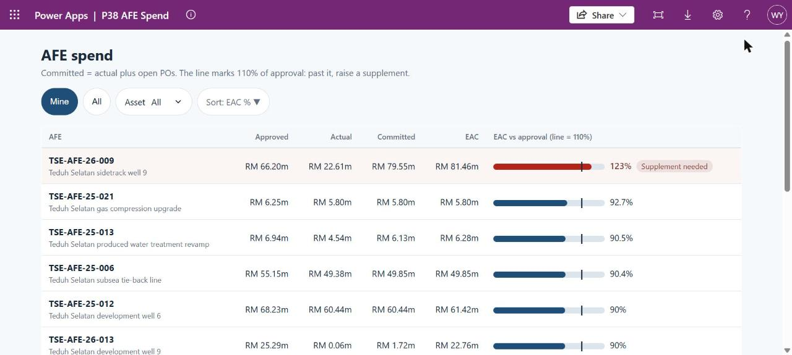
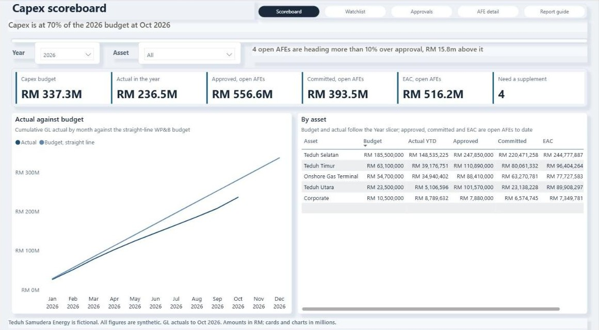
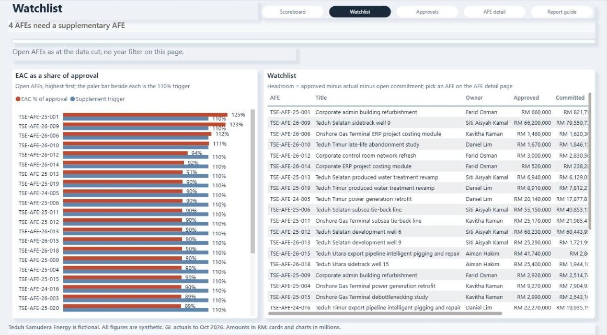
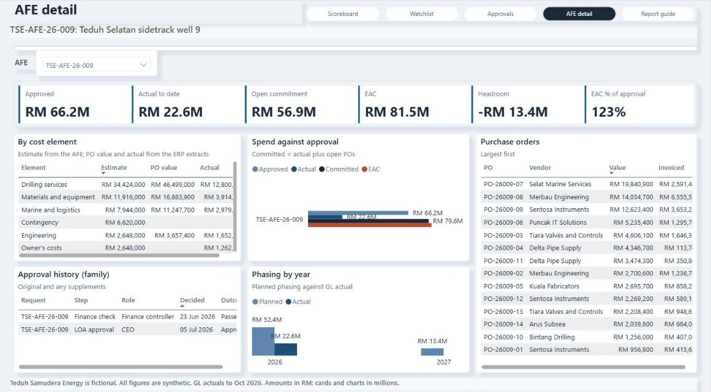

Capex AFE desk
Raise an AFE in an app, approve it by the limits of authority, and watch its spend come back from Fabric each night.
The company is fictional and all data is synthetic. Teduh Samudera Energy, a Malaysian upstream operator with three offshore fields, an onshore gas terminal and corporate. There is no live link: you build it in your own tenant in about two and a half hours.
Source on GitHub · Download ZIP · Build record
Get the code and check what you need
One repository holds every part: the Dataverse tables and seed, the approval flow, the canvas app as YAML, the code app, the Fabric items, and the scripts that built them.
Download the repository (ZIP), or clone it:
git clone https://github.com/BIVenture2025/teduh-capex-afe-desk.git cd teduh-capex-afe-desk python3 --version # 3.10 or later node --version # 20 or later, for the code app pip install azure-identity fabric-cicd pandas npm install -g @microsoft/power-apps-cli
az login. Code apps need Dataverse in the environment.Generate the data and its control totals
Nothing is downloaded. A seeded generator writes 63 AFEs for four assets and corporate, 2024 to 2026, with their estimates, phasing and approval history, plus the ERP side: 455 purchase orders and 4,718 GL lines. It also writes the totals every later step is checked against.
cd data python3 gen_teduh_capex.py # writes out/*.csv and control_totals.json # po_value_rm 678,909,900.00 gl_amount_rm 584,437,639.23 afe_rows 63
src/oracle.py computes what Gold must produce for every AFE family (approved, committed, EAC, the 110% flag) and the LOA tier for 18 test amounts. The Gold notebook refuses to report OK unless its numbers equal the oracle's.Build the Dataverse tables and seed them
One script creates the publisher (prefix tsc), the solution TeduhCapex, 8 tables and their columns, then loads the seed.
# edit dataverse/dv_build.py: ORG = "https://<yourorg>.crm.dynamics.com", OWNER = your sign-in python3 dataverse/dv_build.py schema # about 12 minutes: metadata calls are slow python3 dataverse/dv_build.py seed # $batch, 100 rows a call python3 dataverse/dv_build.py verify # expect 63 AFEs, 314 lines, 122 phasing, 132 decisions, 4 LOA tiers, 5 assets
A column called Status
Dataverse already has a system column displayed as Status. A custom column with the same display name is shown as Status (tsc_status), and Power Fx formulas that say Status fail to compile (82 errors here). Write the logical name, tsc_status, in formulas.
Create the connections and deploy the approval flow
The flow runs when an AFE's status becomes Submitted: it sums the AFE family, picks the LOA tier, asks the finance controller, then the tier's approver, in Approvals, and writes each decision back. It needs three connections: Dataverse, Approvals and Office 365 Outlook.
- In Power Apps, Connections > New connection: create the three, signed in as you.
- Put their ids in
flows/flow_deploy.py(CONNS). - Run it: it creates the connection references, the flow, turns it on and reads its state back.
python3 flows/flow_build.py # writes clientdata.json from the LOA thresholds python3 flows/flow_deploy.py # expect statecode 1, statuscode 2 python3 flows/test_flow_rule.py # FLOW_RULE 18 of 18 OK
Build the canvas app and the code app
The canvas app is generated as .pa.yaml and compiled into a Studio session by the Canvas Authoring MCP server.
The spend screen is a React code app that reads the nightly status from Dataverse.
- Open your solution, New > App > Canvas app, tablet layout. Turn on Settings > Updates > Coauthoring and save.
- Add the 8 Dataverse tables (Add data). The MCP cannot add data sources.
- Connect the MCP to the app and compile
app/src. Expect 0 errors; select another screen before a compile removes the default Screen1.
cd codeapp && mkdir build && cd build npx degit microsoft/PowerAppsCodeApps/templates/vite . pa app init -n "P38 AFE Spend" -e <your-environment-id> pa app add data-source --connector dataverse --table tsc_afestatus --org-url https://<yourorg>.crm.dynamics.com pa app add data-source --connector dataverse --table tsc_afe --org-url https://<yourorg>.crm.dynamics.com cp ../src/*.tsx ../src/*.ts ../src/*.css src/ && npm run build && pa app push

pa app push. The push adds the app to your preferred solution, and an app made in Studio outside a solution has no row in the canvas apps table. Add it later with Add existing > App > Canvas app > Outside Dataverse, after every Studio tab is closed.Deploy the Fabric items and the two Copy jobs
fabric/ holds the Lakehouse, three notebooks, the pipeline, the Direct Lake model and the report. Replace the placeholder ids
aaaaaaaa-0000-4000-8000-000000000001 (workspace) and ...0002 (Lakehouse) with yours, then deploy.
python3 kit/deploy_items.py fabric --workspace-id <ws> --types Lakehouse Notebook DataPipeline # run NB_TeduhCapex_ERP once: verdict ERP_OK
Create the Copy jobs in the Fabric wizard:
| Copy job | Source to destination | Settings |
|---|---|---|
CJ_AFE_In | Dataverse (your environment domain, organizational account) to the Lakehouse: tsc_afe, tsc_afeline, tsc_afephasing,
tsc_afedecision, tsc_asset, tsc_loatier as bronze_* | Full copy, Tables, Overwrite |
CJ_Status_Out | Lakehouse gold_afe_status_out, gold_asset_budget_out to tsc_afestatus, tsc_assetbudget | Full copy, Merge (upsert on the GUID key) |
Copy job column mapping to Dataverse
Import schemas lists every destination column, system ones included, with empty sources, and the job will not save. Clear all unmapped mappings leaves exactly the columns whose names match: 13 for status, 9 for budget.
Run the night and check every number
Run PL_TeduhCapex_Nightly: Copy in, ERP, Gold, Copy out, with a gate after each that fails the run unless the step's verdict ends in
_OK. Then deploy the model and report and refresh the model (Direct Lake framing).
python3 kit/deploy_items.py fabric --workspace-id <ws> --types SemanticModel Report
| Check | Expected |
|---|---|
| Gold verdict | GOLD_OK: 57 families equal the oracle; 30 open, 4 flagged |
| Copy job in / out | 640 rows read and written / 57 + 15 rows upserted |
| Model | 42 measures, none in error (INFO.MEASURES()); GL RM 584,437,639.23, PO RM 678,909,900.00 |
| LOA | app screen "LOA vectors passed: 18 of 18"; test_flow_rule.py 18 of 18 |
| End to end | raise a RM 15.3m supplement on TSE-AFE-26-009, approve both steps, run the night: 4 flagged become 3 |



Traps met in the build
A report that validates can still be wrong
Both validators passed, and the service still showed six defects: a subtitle under a slicer, the title naming 2028 (the date table runs to 2028), the Year slicer on All mixing years, a stacked bar adding the 110% line to EAC, "15.8m RM", and a cumulative line that ran from 2024. Look at every page in the real renderer.
Filtering the date key drops the Year filter
CALCULATE([Actual], 'Date'[month_date] <= mx) on a date table removes every filter on that table. Use DATESBETWEEN('Date'[month_date], DATE(YEAR(mx),1,1), mx).
Studio caches rows
The app preview keeps Dataverse rows from when Studio opened. After a Copy job writes, reload Studio.
Known limits
AFE numbers are given by the app at submit, not by the flow. AFE detail uses a slicer, not drill-through. The home tile counts every flagged AFE, not only yours. Spend is as at the last nightly run.
What this does not do
No real ERP link, no purchase requisitions, no budget transfers between assets. The company and all figures are synthetic.